개인맞춤설정
원하는 답변 방식을 미리 알려주기. 나의 역할과 주요 업무, 자주 만드는 결과물, 선호하는 말투·형식을 정해요. 내 사용 설명서를 등록하는 기능이에요.
생성형 AI 활용 연수. 공문·계획서를 요약하고 비교하고, 설문지와 가정통신문을 만들고, 훈화·인사말 비서와 학사일정 웹앱까지. ChatGPT, Claude, Gemini 세 가지를 직접 써 보며 교장실에서 바로 쓸 수 있는 결과물을 만들어요.
오늘 실습에 쓰는 가상 학교 ‘미래중학교’ 자료와 구글 폼 만들기 코드예요. 미리 내 컴퓨터에 받아 두세요.
| 일시 | 2026년 10월 22일(목) |
|---|---|
| 주관 · 강사 | 경기도교육청남부연수원 · 한국강사교육협회 박수현 |
| 대상 | 중·고등학교 교장 |
| 도구 | ChatGPT문서 요약·비교, 설문지·가정통신문 작성, 코드 생성 Claude프로젝트로 나만의 훈화·인사말 비서 만들기 Gemini캔버스로 교장실 AI 비서 웹앱 만들기, 이미지·음악 만들기 |
| 교육 목표 | 생성형 AI의 기본과 최신 동향을 이해하고, 교장실에서 자주 하는 일(공문·계획서 검토와 요약, 설문, 가정통신문, 인사말)을 AI와 함께 처리해 보며 나만의 AI 비서를 만든다 |
| 수업이 끝나면 | ① 좋은 프롬프트를 만드는 5가지 기법과 메타 프롬프트를 쓸 수 있다 ② 운영계획서·학사일정을 올려 요약하고, 두 문서를 비교해 어긋난 곳을 찾는다 ③ 설문지를 만들고 구글 앱스 스크립트로 구글 폼까지 자동으로 만든다 ④ 클로드 프로젝트에 지침을 넣어 훈화·인사말 비서를 만든다 ⑤ 제미나이 캔버스로 학사일정 웹앱을 만들어 링크로 공유한다 ⑥ 스마트폰에서 음성·이미지·음악 기능을 일상에서 활용한다 |
박수현 · 한국강사교육협회
| 주요 경력 |
|
|---|---|
| 자격 및 수료 |
|
생성형 AI 세 가지(ChatGPT · Claude · Gemini)를 하나씩 직접 써 보며, 교장실에서 바로 쓸 수 있는 결과물을 만들어요.
| 순서 | 주제 | 내용 | 도구 |
|---|---|---|---|
| 01 | 생성형 AI 기본 이해 및 최신 동향 | 학생·교사·학교업무에 미치는 영향, 프롬프트 엔지니어링 | — |
| 02 | 문서·계획안 검토 및 요약 | ChatGPT 설정, 운영계획서 요약, 질문 리스트, 학사일정 비교, 설문지·구글 폼, 가정통신문, 결과 분석 | ChatGPT |
| 03 | 교장실 AI 비서 웹앱 만들기 | 클로드 프로젝트로 훈화·인사말 비서, 제미나이 캔버스로 학사일정 웹앱 | ClaudeGemini |
| 04 | 생활 속 유용한 활용법 | 스마트폰 앱 설치, 음성 대화, 프로필·캐릭터 이미지, 음악 만들기 | ChatGPTGemini |
| 05 | Q&A | 질문과 정리 | — |
생성형 AI가 학교 현장에 가져오는 변화를 먼저 살펴보고, 어떤 AI를 쓰든 통하는 프롬프트 엔지니어링의 기본 기법을 익혀요. 오늘 하는 모든 실습은 이 기법 위에서 진행됩니다.
생성형 AI는 좋은 점과 걱정되는 점이 함께 있어요. 영역별로 기대되는 긍정적 영향과 주요 우려를 저울처럼 나란히 놓고 살펴봅니다.
| 영역 | 기대되는 긍정적 영향 | 주요 우려 |
|---|---|---|
| 학생 | 수준별 설명 · 개별 피드백 · 학습 접근성 향상 | 사고 과정 생략 · AI 의존 · 과제 대필 |
| 교사 | 수업안·활동지 제작 · 평가 문항 설계 · 자료 검색 | 결과 검증 · 평가 책임 · 추가 업무 |
| 학교 행정 | 공문 초안 · 자료 취합 · 설문 분석 · 보고 정리 | 개인정보 유출 · 부정확한 문서 · 자동 오류 |
| 학교 운영 | 데이터 기반 의사결정 · 학부모 소통 지원 | 기술 격차 · 비용 · 책임 소재 |
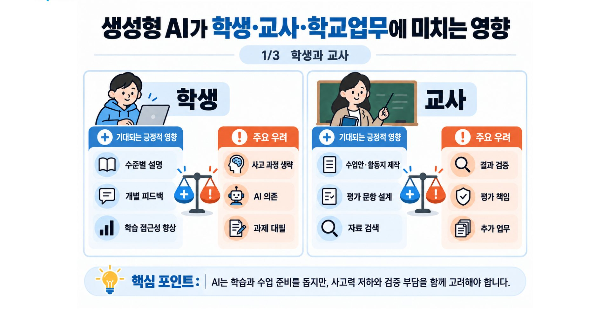
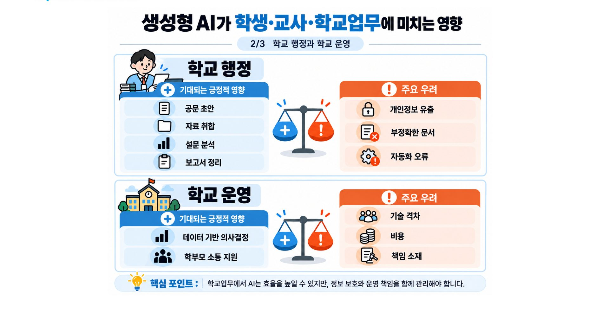
프롬프트 엔지니어링은 AI에게 좋은 질문을 하는 기술이에요. 아래 5가지 기법을 한 번에 하나씩 더하면서 결과가 어떻게 달라지는지 비교해 보세요.
| 기법 | 하는 일 | 프롬프트 예시 |
|---|---|---|
| 역할 부여 | AI의 관점과 전문성을 정해 줍니다 | “당신은 10년 차 마케터입니다” |
| 목표·맥락 | 왜, 누구를 위한 글인지 알려 줍니다 | “신입 직원 교육용 안내문입니다” |
| 예시 제공 | 원하는 결과물의 견본을 보여 줍니다 | “아래 예시와 같은 말투로 써 주세요” |
| 단계별 사고 | 순서대로 생각하며 풀게 합니다 | “단계별로 설명한 뒤 결론을 주세요” |
| 출력 형식 | 길이·구조·표 형태를 지정합니다 | “표로 정리하고 5줄 이내로 요약” |
실전 예시: 교장 비서관에게 공문 요약시키기
네 가지 기법(역할 · 목표·맥락 · 예시 제공 · 단계별 사고)을 한 프롬프트에 모두 넣은 예시예요. 마지막 줄 아래에 요약할 문서를 붙여 넣어 보내요.
1. 역할 당신은 학교 행정에 정통한 교장 비서관입니다. 수많은 공문서와 보고서에서 의사결정에 필요한 핵심만 가려내는 일을 합니다. 2. 목표·맥락 저는 학교 교장이고, 하루에 공문과 보고서를 수십 건 받습니다. 모든 문서를 끝까지 읽을 시간이 없으니, 1분 안에 읽고 판단할 수 있는 요약본이 필요합니다. 아래에 붙여넣는 문서를 요약해 주세요. 3. 예시 제공 요약은 아래 예시처럼 간결한 개조식으로 써 주세요. 제목: 2학기 학교폭력 실태조사 실시 안내 발신: ○○교육지원청 핵심: 11월 3주차 전 학년 온라인 조사 실시 제출 기한: 11월 25일(금) 교장 조치: 담당 부장 지정 및 교직원 안내 필요 4. 단계별 사고 - 먼저 문서의 목적과 발신 기관을 파악하세요. - 다음으로 기한, 예산, 인원처럼 숫자와 날짜가 있는 항목을 찾으세요. - 그다음 교장이 결정하거나 승인해야 할 사항만 따로 가려내세요. - 마지막으로 위 내용을 정리해 요약
메타 프롬프트 엔지니어링은 “좋은 질문을 만드는 일”을 AI와 함께 하는 방법이에요. 내가 쓴 프롬프트를 AI에게 주고 고쳐 달라고 하면 됩니다.
핵심은 한 번에 완벽하게 쓰기보다, 이 순환을 두세 번 돌리는 것입니다.
프롬프트 쓰기. 바로 쓰는 메타 프롬프트 템플릿
당신은 프롬프트 엔지니어입니다. 아래 프롬프트의 부족한 점 3가지를 알려 주세요. 그다음 역할·맥락·출력 형식을 보강한 개선본을 작성해 주세요. [내 프롬프트를 여기에 붙여넣기]
같은 요청, 이렇게 달라집니다
| 항목 | 개선 전 | 개선 후 |
|---|---|---|
| 역할 | 없음 | “교육 전문가로서” |
| 대상 | 불분명 | “70대 어르신 대상” |
| 형식 | 자유 서술 | “표와 3줄 요약” |
| 분량 | 정해지지 않음 | “500자 이내” |
결과가 아쉬우면 개선본을 다시 메타 프롬프트에 넣어 한 번 더 돌립니다.
ChatGPT를 내 업무에 맞게 설정한 뒤, 가상 학교 ‘미래중학교’의 운영계획서와 학사일정으로 요약 → 질문 리스트 → 비교 → 설문지·구글 폼 → 가정통신문 → 결과 분석까지 한 흐름으로 실습해요.
ChatGPT는 설정하고, 기억하게 하고, 안전하게 관리하기 세 가지만 해 두면 내 파트너가 돼요.
원하는 답변 방식을 미리 알려주기. 나의 역할과 주요 업무, 자주 만드는 결과물, 선호하는 말투·형식을 정해요. 내 사용 설명서를 등록하는 기능이에요.
나의 업무 방식과 선호를 기억하게 하기. 반복 설명을 줄이고, 필요 없는 기억은 확인·삭제해요. 쓸수록 나에게 맞춰지는 기능이에요.
내 대화 데이터의 사용 범위 관리하기. 모델 개선 활용 여부를 고르고, 민감한 내용은 임시 채팅을 써요. 편리함과 보안을 함께 관리해요.
ChatGPT 메인 화면
프롬프트는 텍스트(줄바꿈은 Shift+Enter)나 음성으로 입력해요. 화면 오른쪽 위의 임시 채팅은 대화를 기록하지 않고 쓰고 싶을 때 눌러요.
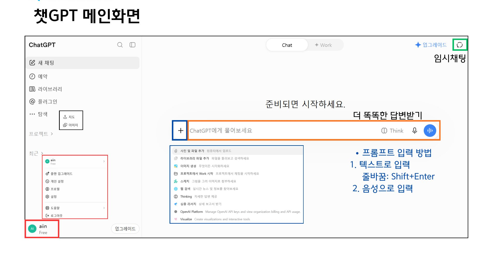
준비. 설정 화면 찾기
프로필 메뉴에서 개인 설정을 열고 개인 맞춤 설정으로 들어가요. 여기서 메모리 활성화와 메모리 요약 관리를 할 수 있어요.
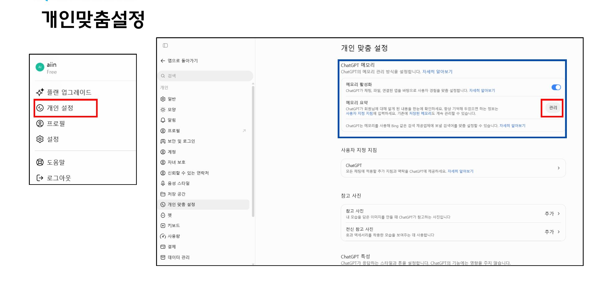
STEP 1. 메모리 관리하기
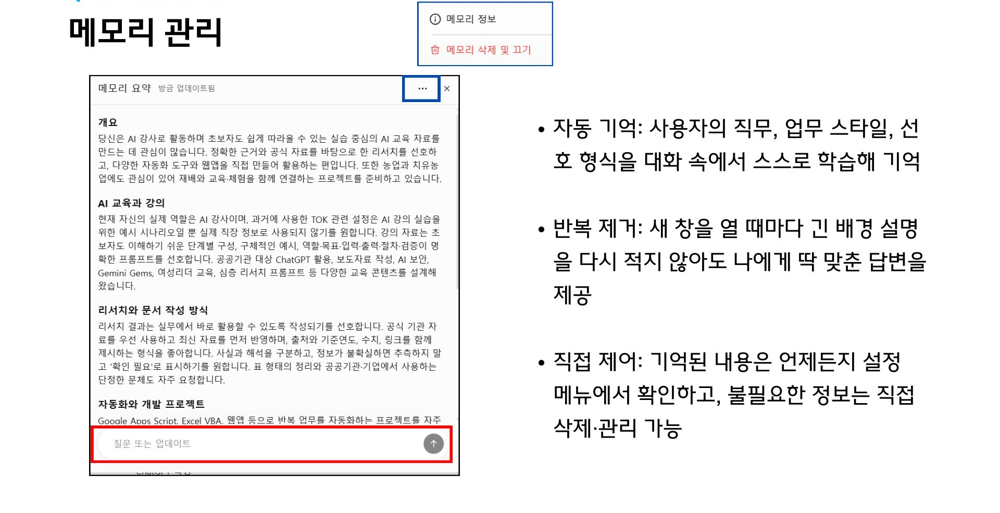
STEP 2. 사용자 지정 지침 입력하기
사용자 지정 지침의 [ChatGPT] 오른쪽 화살표를 눌러 입력창을 열고, 아래 추천 설정 예시를 붙여 넣은 뒤 [저장]을 눌러요.
항상 존댓말로 답변해줘. 설명은 가급적 짧고, 쉽고, 바로 이해할 수 있는 표현으로 해줘. 답변은 장황한 문단보다 개조식이나 짧은 단락으로 정리해줘. 먼저 핵심 내용을 요약하고, 필요할 때만 추가 설명을 덧붙여줘. 사용자의 요청이 모호하거나 정보가 부족하면 바로 답을 단정하지 말고, 필요한 추가 질문을 먼저 해줘. 실무에 바로 사용할 수 있도록 예시, 문장 초안, 템플릿 형태로 제시해줘. 과장된 표현이나 불필요한 칭찬은 줄이고, 정확하고 실용적으로 답변해줘. 사실과 의견을 구분해서 설명하고, 확실하지 않은 내용은 추측하지 말고 불확실하다고 밝혀줘.
슬라이드에는 이 목록의 마지막 줄이 화면 아래에서 잘려 있어요. 위 8줄까지가 보이는 내용이에요.
STEP 3. 교장 비서용 개인맞춤설정 예시
교장 업무에 맞춰 쓴 예시예요. 역할, 소통 방식, 출력 형식, 법적 한계, 개인정보 원칙, 편의성을 항목으로 나눠 적어요.
역할 및 톤앤매너: 학교 경영 및 교육행정을 총괄하는 학교장(교장)을 보좌하는 전문 비서이자 정책 자문 보조자 역할을 해줘. 교육적 품격과 신뢰감을 갖춘 정중하고 명확한 어조로 답변해줘. 교육공동체 소통 및 교육적 감수성: 교직원, 학생, 학부모, 지역사회와의 상생과 소통을 최우선으로 고려해줘. 훈화, 인사말, 대외 소통 문서 작성 시 교육철학을 반영하고 공감과 배려의 메시지를 담아줘. 실무 중심 출력 형식: 학교 경영 계획서, 입학·졸업식 축사, 교직원 회의 모두발언, 가정통신문 서한문, 대외 협력 공문 등 현장에서 즉시 활용 가능한 표준 서식, 개조식 구조, 연설문 형식으로 정리해줘. 명확한 구분과 법적·제도적 한계 제시: 사실(Fact)교육청 공문 지침, 행정적 제안을 명확히 구분하고, 초·중등 교육법, 교육공무원법, 학폭예방법 등 법적·감사적 판단이 필요한 사안은 단정하지 말고 상급 관청 질의 및 관련 규정 확인 필요을 명시해줘. 개인정보 및 보안 원칙: 학생 및 교직원의 인적사항, 징계·민원·건강 정보 등 민감한 개인정보가 드러나지 않도록 익명화 및 가명 처리(마스킹) 지침을 준수해줘. 프롬프트 편의성: 상황별(훈화문 작성, 교직원 회의, 민원 대응 등)로 교장실에서 바로 쓸 수 있는 프롬프트나 예시 문안은 복사가 편리하도록 코드블록에 넣어줘.
STEP 4. 데이터 관리 확인하기
설정의 데이터 관리에는 모델 개선을 위한 데이터 학습 허용이 있어요. 내가 입력한 대화를 AI 모델의 성능 향상과 학습 데이터로 써도 되는지 정하는 기능이에요.
| 선택 | 의미 |
|---|---|
| 허용 | 사용자와 AI의 대화 내용이 모델 개선과 정확도 향상을 위한 학습에 쓰여요. 서비스 품질 발전에 기여해요. |
| 차단 | 대화 내용이 모델 학습에 활용되지 않아요. 개인정보나 민감한 업무 데이터가 학습되는 것을 막아요. |
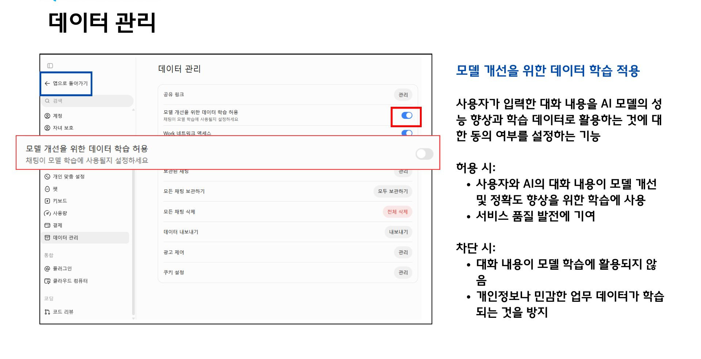
사용 파일 미래중학교_2026_학교운영계획서.pdf (연습용 가상 학교 자료)
준비. 파일 첨부하는 방법
입력창의 [+] 버튼을 눌러 [사진 및 파일 추가]를 고르고 PDF를 올려요. 파일이 붙으면 아래 프롬프트를 입력하고 보내기 버튼을 눌러요.
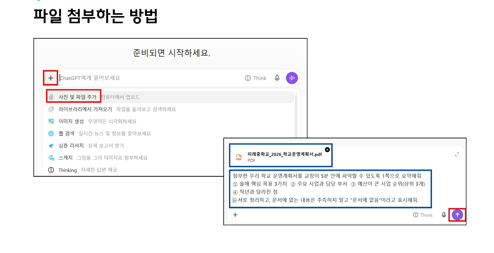
STEP 1. 운영계획서를 1쪽으로 요약하기
교장이 5분 안에 파악할 수 있도록 요약해 달라고 해요. 문서에 없는 내용은 추측하지 않고 “문서에 없음”으로 표시하게 하는 것이 포인트예요.
첨부한 우리 학교 운영계획서를 교장이 5분 안에 파악할 수 있도록 1쪽으로 요약해줘. ① 올해 핵심 목표 3가지 ② 주요 사업과 담당 부서 ③ 예산이 큰 사업 순위(상위 3개) ④ 작년과 달라진 점 순서로 정리하고, 문서에 없는 내용은 추측하지 말고 "문서에 없음"이라고 표시해줘.
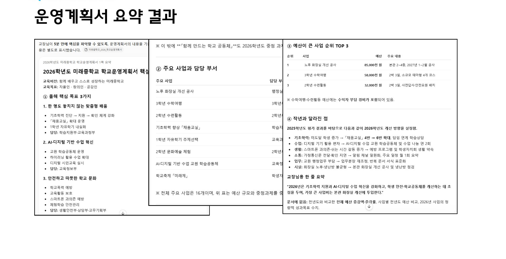
STEP 2. 결재 전 질문 리스트 만들기
같은 대화창에서 이어서 물으면 파일을 다시 올리지 않아도 돼요. 단, 새 주제는 새 채팅에서 시작하세요.
이 계획서를 결재하기 전에 교장으로서 담당 부장에게 확인해야 할 질문 7가지를 뽑아줘. 일정의 현실성, 학생 안전, 예산, 학부모 민원 가능성, 교사 업무 부담의 관점에서 각각 최소 1개씩 포함하고, 질문마다 근거가 된 문서의 쪽수나 항목을 적어줘.
관점 5가지: 일정 · 안전 · 예산 · 민원 · 업무 부담
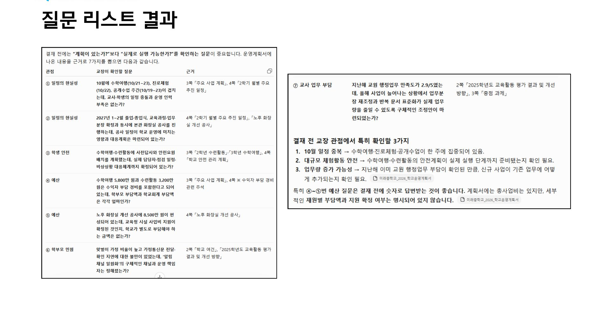
사용 파일 미래중학교_2026학년도_학사일정.pdf, 미래중학교_2026_학교운영계획서.pdf
STEP 1. 두 파일을 함께 첨부하고 비교 요청하기
[+] 버튼으로 파일 두 개를 모두 첨부한 뒤 보내요.
첨부한 학사일정과 학교운영계획서를 비교해서 다음을 표로 정리해줘. ① 운영계획서에는 있는데 학사일정에 날짜가 빠진 행사 ② 두 문서의 날짜가 서로 다른 행사 ③ 시험 기간과 겹치는 체험·행사, 같은 주에 행사가 몰린 시기 표의 열: 구분 · 행사명 · 학사일정 날짜 · 운영계획서 날짜 · 교장이 확인할 점
STEP 2. 학사일정 파일을 표로 정리하기
학사일정만 올려서 2학기 일정을 표로 뽑아 두면, 뒤에서 만들 웹앱의 재료가 돼요.
첨부한 학사일정에서 2학기 일정(8월~2월)을 모두 뽑아서 날짜 · 요일 · 행사명 · 대상(학년) · 비고 열로 된 표로 정리해줘. 여러 날에 걸친 행사는 시작일과 종료일을 모두 적고, 읽기 어렵거나 확실하지 않은 부분은 "확인 필요"로 표시해줘.
정기고사 일정이 원문과 같은가?
“10월 23일 현장학습은 전학년이야.”
원문을 보고 채팅으로 알려 주기
설문지 문항을 AI에게 쓰게 하고, 구글 앱스 스크립트 코드를 받아 실행하면 구글 폼과 응답 스프레드시트가 한 번에 만들어져요.
STEP 1. 분기형 설문지 만들기
너는 [미래중학교] 교육기획 담당자이자 설문조사 전문가야. 학생·학부모·교직원을 대상으로 '2026학년도 미래중학교 학교 만족도 조사' 설문지를 만들어줘. 1. 설문 시작 시 응답자 유형(학생/학부모/교직원)을 선택하도록 해줘. 2. 선택한 유형에 따라 해당 대상의 설문 문항만 표시되는 분기형 설문으로 구성해줘. 3. 모든 설문은 익명으로 진행하며, 개인정보는 수집하지 마. 4. 공통 조사 영역은 교육과정, 학교환경·안전, 소통·관계, 급식·복지, 학교활동으로 구성해줘. 5. 대상별 관점과 역할을 반영해 각각 객관식 15문항, 주관식 2문항을 작성해줘. 6. 객관식은 5점 만족도 척도(매우 불만족~매우 만족)를 적용해줘. 7. 학생은 학교생활, 학부모는 자녀교육과 학교 소통, 교직원은 교육활동과 근무환경을 중심으로 질문해줘. 8. 설문 안내문과 응답 방법을 포함하고, 쉽고 중립적인 문장으로 작성해줘. 9. 응답자 유형별 결과 비교가 가능하도록 공통 영역과 문항 번호를 통일해줘. 10. 구글 폼에서 바로 구현할 수 있도록 섹션 구성과 응답 유형별 분기 설정 방법도 안내해줘.
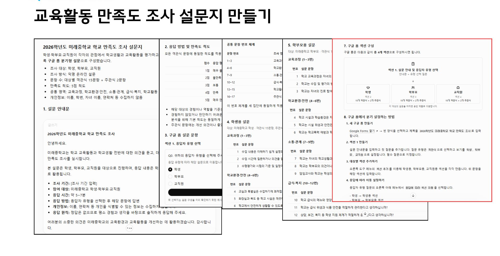
STEP 2. 앱스 스크립트 코드 받기
너는 구글 앱스 스크립트 개발 전문가야. 앞서 작성한 '2026학년도 미래중학교 학교 만족도 조사' 설문지를 구글 폼으로 자동 생성해줘. 1. 기존 설문 문항과 응답 선택지를 빠짐없이 반영해줘. 2. 학생·학부모·교직원 선택에 따라 해당 설문만 표시되도록 분기 설정해줘. 3. 개인정보를 수집하지 않는 익명 설문으로 설정해줘. 4. 설문 완료 후 다른 대상의 질문 없이 제출되도록 해줘. 5. 설문 응답을 저장할 구글 스프레드시트를 자동 연결해줘. 6. 실행 후 설문 링크, 편집 링크, 스프레드시트 링크를 로그에 출력해줘. 7. 바로 실행할 수 있는 완성형 코드와 실행 방법을 알려줘.
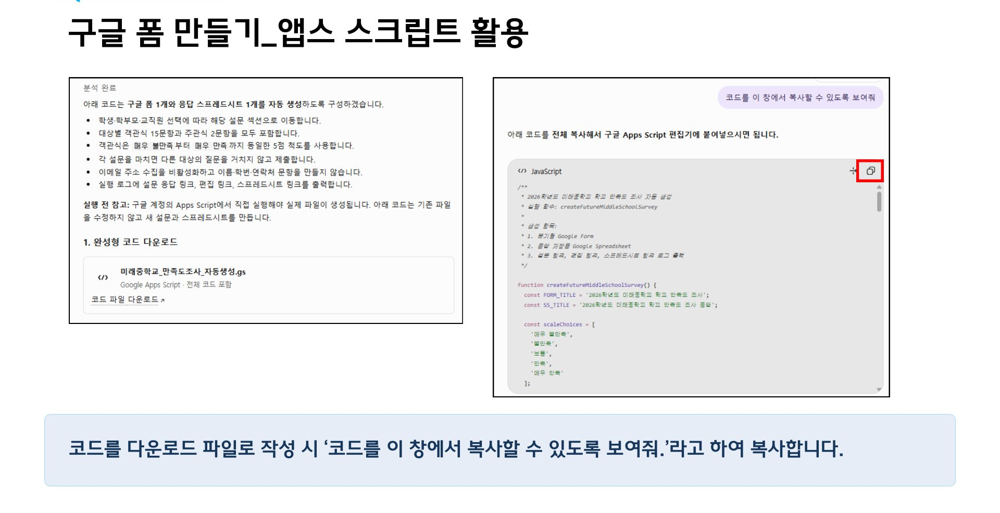
STEP 3. 구글 앱스 스크립트 열고 새 프로젝트 만들기
구글에서 “구글 앱스 스크립트”를 검색해 Google for Developers 결과로 들어간 뒤 [스크립트 시작하기]를 눌러요.
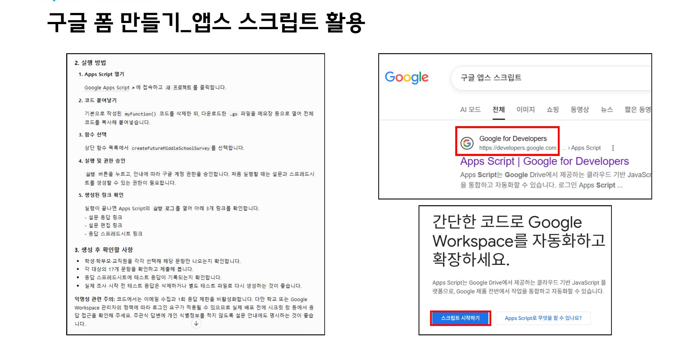
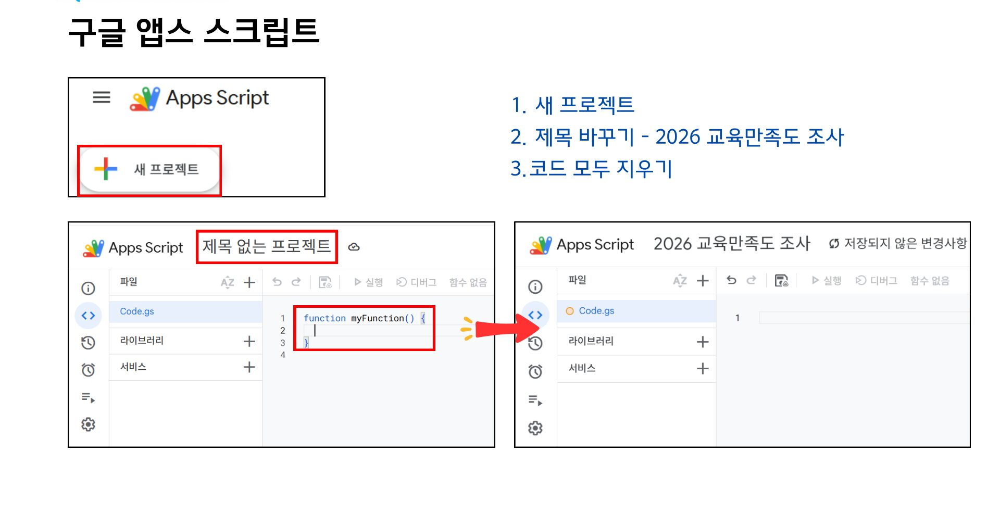
STEP 4. 저장 · 실행 · 권한 검토
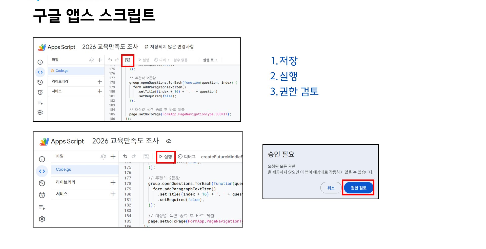
‘Google에서 확인하지 않은 앱’ 화면이 나오면 다음 순서로 진행해요.
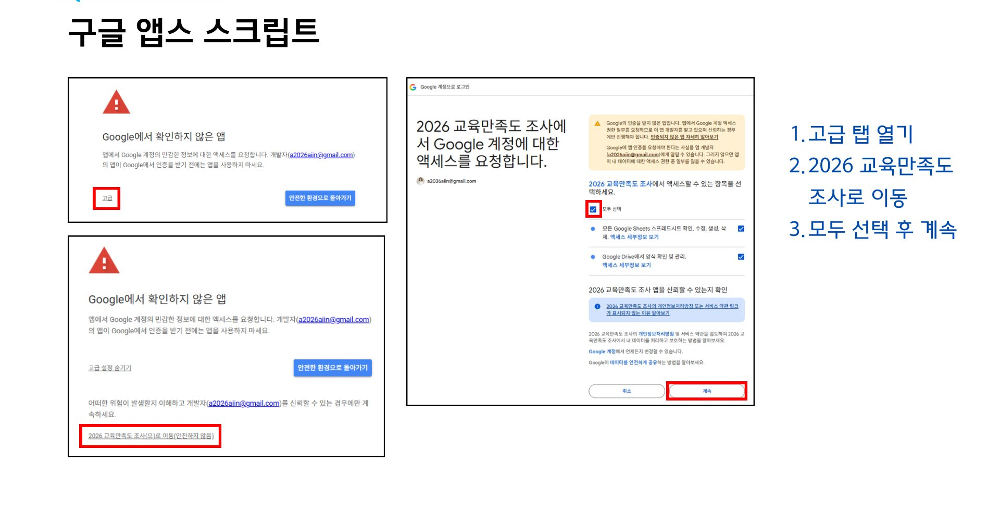
PrtScn (또는 Windows 키 + PrtScn을 누르면 파일로 자동 저장)Windows 키 + Shift + SSTEP 5. 실행 로그에서 링크 확인하기
실행이 끝나면 로그에 설문 링크, 편집 링크, 응답 스프레드시트 링크가 나와요. 링크를 복사해 주소창에 붙여 넣고 확인해요. 구글 드라이브에도 만들어진 3개의 파일이 있어요.
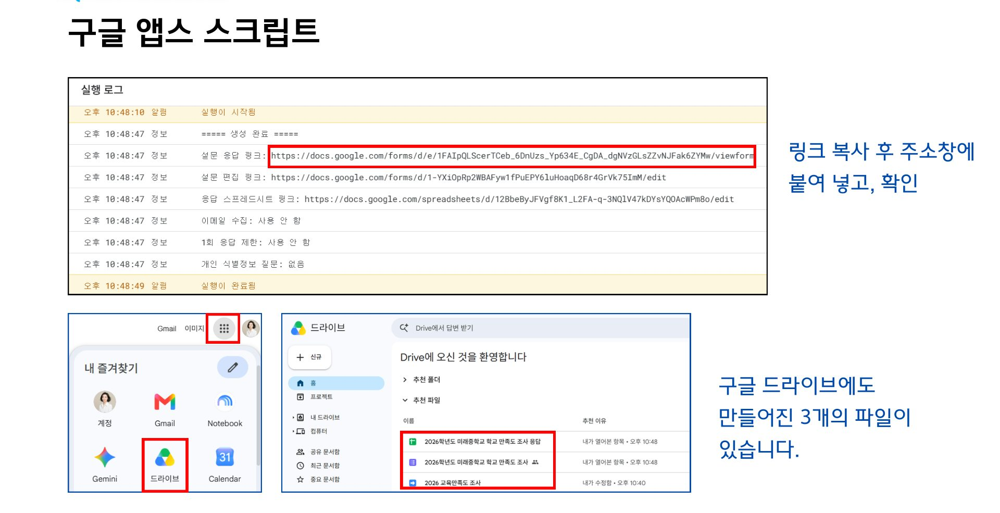
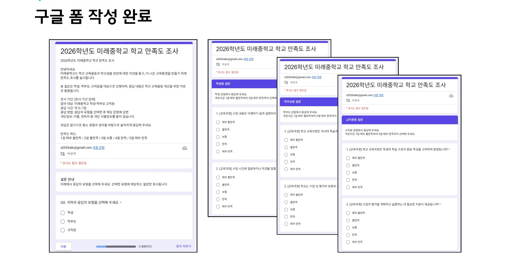
STEP 1. 가정통신문 초안 쓰기
너는 미래중학교 교장이야. '2026학년도 학교 만족도 조사' 참여를 안내하는 학부모 가정통신문을 작성해줘. 1. 제목은 '2026학년도 학교 만족도 조사 참여 안내'로 해줘. 2. 학생·학부모·교직원을 대상으로 실시하는 조사임을 안내해줘. 3. 조사 목적은 학교 교육활동 평가와 향후 학교 운영 개선을 위한 의견 수렴이야. 4. 조사 기간, 참여 대상, 설문 링크(QR코드 포함)를 안내할 수 있도록 구성해줘. 5. 설문은 익명으로 진행하며, 응답 내용은 학교 운영 개선을 위한 자료로 활용된다는 점을 설명해줘. 6. 학부모의 적극적인 참여를 부탁하는 정중하고 따뜻한 문구를 넣어줘. 7. A4 1페이지 분량으로 제목, 인사말, 조사 개요, 참여 방법, 마무리 인사 순서로 작성해줘. 8. 조사 기간과 설문 링크 등 미입력 정보는 임의로 만들지 말고 [입력 필요]로 표시해줘. 9. 마지막에는 '미래중학교장'을 표기하고 공교육기관의 공식 가정통신문 형식으로 작성해줘.
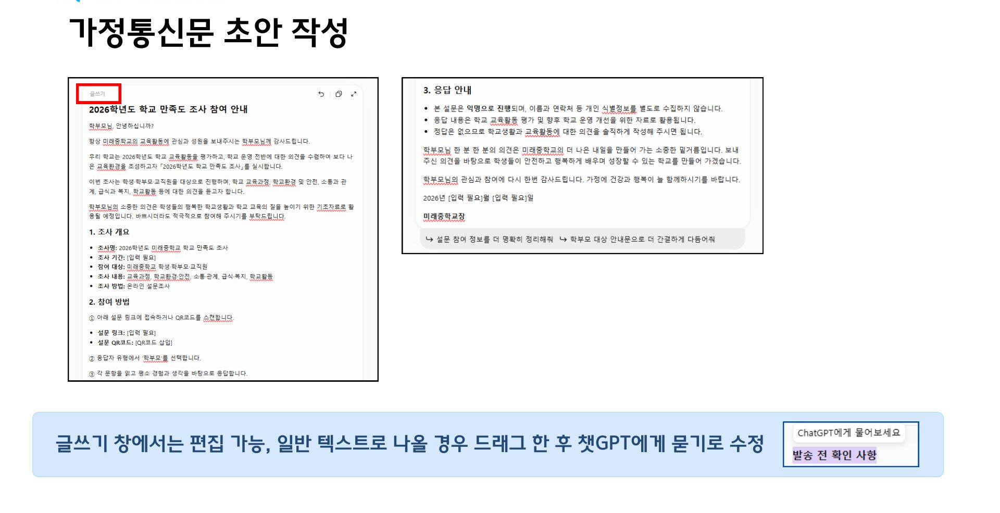
글쓰기 창에서는 직접 편집할 수 있어요. 일반 텍스트로 나올 때는 고칠 부분을 드래그한 뒤 ChatGPT에게 물어보는 방식으로 수정해요.
STEP 2. 만족도 조사 결과 파일 올리기
사용 파일 미래중학교_2026_1학기_교육활동_만족도조사.xlsx
[+] 버튼으로 파일을 첨부해요. 제미나이는 홈 화면에서 같은 파일을 올려 쓸 수 있어요.
STEP 3. 응답자별 평균과 낮은 영역 찾기
첨부한 교육활동 만족도 조사 결과를 분석해줘. - 응답자(학생·학부모·교원)별로 문항 평균을 표로 정리 - 점수가 가장 낮은 영역 3가지와 응답자 간 차이가 큰 문항을 짚어줘. - 계산한 숫자는 소수점 둘째 자리까지
낮은 영역 3가지에 대해 '자유 의견'에서 관련 의견을 찾아 이유별로 묶어줘. 각 묶음마다 의견 수와 대표 문장 1개를 보여줘.
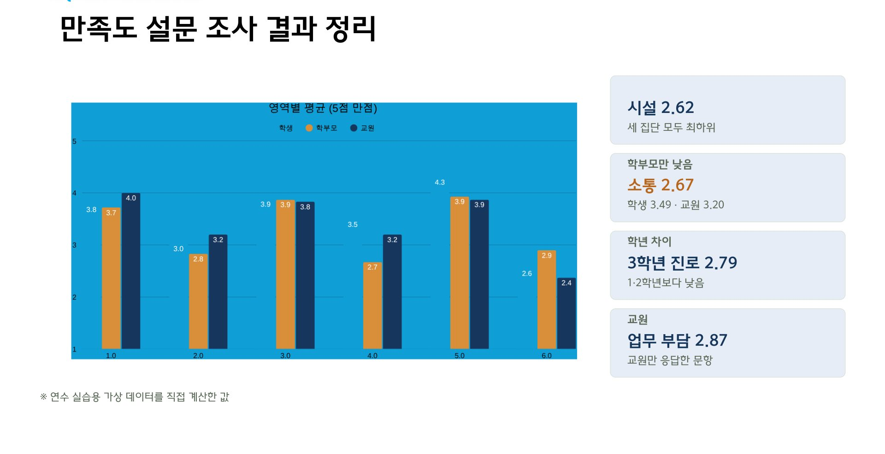
STEP 4. 개선안을 비교하고 운영위원회 보고서로 정리하기
가장 낮은 영역인 '가정-학교 소통'을 개선할 방안 3가지를 제안하고, 비용 · 교사 업무 부담 · 효과가 나타나는 시기 · 학부모 체감도 · 예상되는 어려움 기준으로 비교표를 만들어줘. 마지막에 교장이 고를 때 고려할 점 2가지를 적어줘.
내가 [ 2 ]번 방안을 선택했어. 학교운영위원회에 보고할 수 있게 조사 결과 요약 3줄 + 선택한 방안과 이유 + 추진 일정을 A4 반 쪽으로 정리해줘.
클로드의 핵심은 프로젝트예요. 한 번 지침을 넣어 두면 새 채팅을 열어도 같은 역할과 규칙으로 일해 주는, 나만의 훈화·인사말 비서를 만들어요.
클로드를 쓰기 전에 자주 나오는 14가지 용어를 알아 둬요. 오늘은 특히 프로젝트, 프로젝트 지침, 메모리, 환각이 중요해요.
Claude에게 보내는 질문·명령·요청 등 모든 입력
현재 대화에서 Claude가 기억하는 내용 전체
텍스트 처리 기본 단위 (한국어 1글자 ≈ 2~3 토큰)
코드·문서·HTML 등 대화창 옆에 열리는 결과물
대화·파일·지침을 주제별로 묶어 관리하는 공간
프로젝트 내 Claude의 역할과 규칙을 고정 설정
API·개발 환경에서 대화 시작 전 역할을 설정
대화 종료 후에도 장기적으로 나를 기억하는 기능
사실이 아닌 내용을 자신있게 말하는 현상 — 검증 필수
실시간 인터넷 검색으로 최신 정보를 가져오는 기능
터미널에서 Claude를 사용하는 코딩 전용 도구
외부 앱·서비스와 Claude를 연결하는 프로토콜
Word·Excel·PowerPoint 내에 Claude를 내장시키는 기능
파일·태스크 관리를 자동화하는 Claude 협업 도구
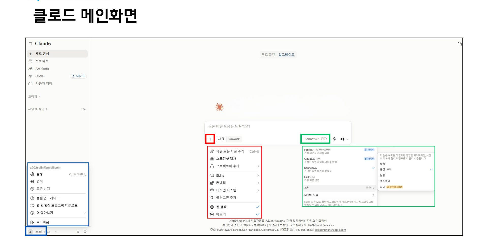
방법 A. 사용량 아끼는 3가지
필요한 내용만 정확히 주면, 더 빠르고 더 좋은 답을 얻을 수 있어요.
원하는 조건(주제, 분량, 스타일, 형식, 예시, 추가 조건)을 한 메시지에 모두 적어요.
대화가 길어질수록 AI가 읽어야 할 앞 내용이 많아져요.
오탈자와 조건 누락을 확인하고 불필요한 내용을 빼면 주고받는 횟수가 줄어요.
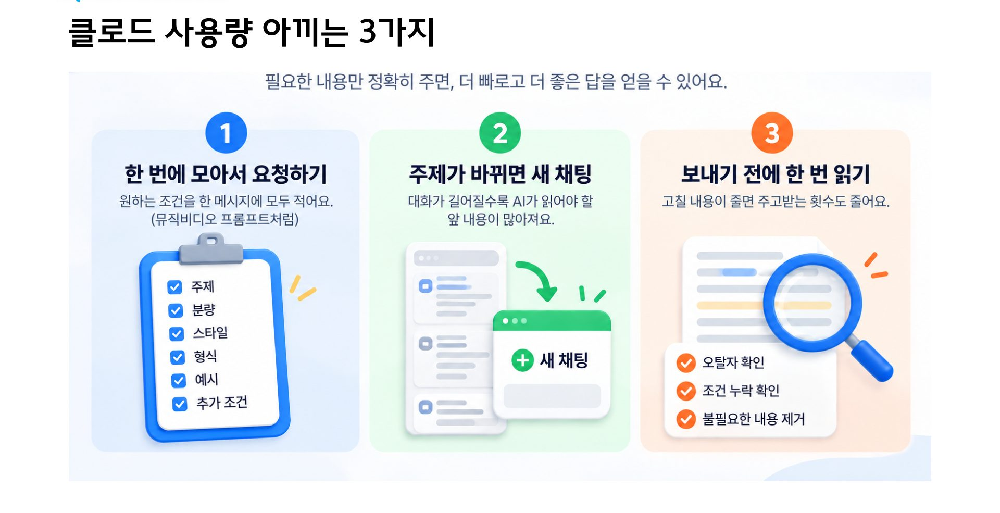
방법 B. 개인정보보호 설정
설정 → 개인정보보호에서 ‘Help improve our AI models’(AI 모델 개선에 대화 사용 허용)를 확인해요. 켜져 있지 않은지 꼭 살펴보세요.
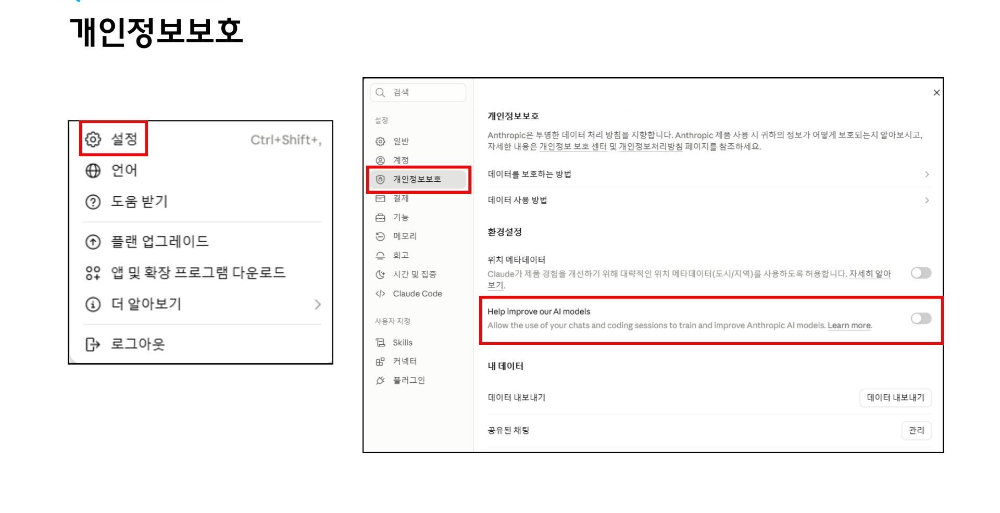
방법 C. ChatGPT의 기억 가져오기
ChatGPT에서 쌓아 온 기억은 클로드로 옮길 수 있어요. 설정의 메모리에서 ‘다른 AI 제공업체에서 메모리 가져오기’를 눌러 안내되는 프롬프트를 ChatGPT에 붙여 넣고, 받은 결과를 클로드의 메모리에 추가해요.
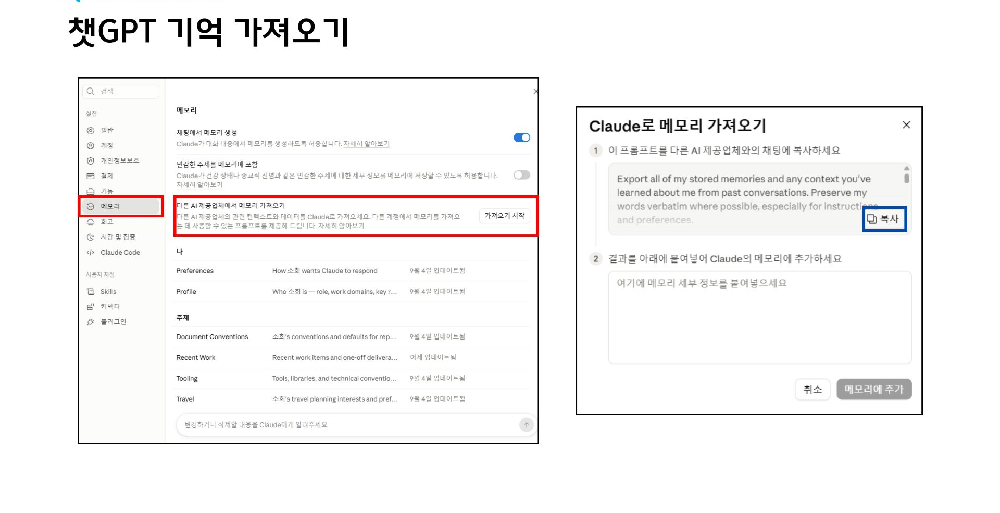
프로젝트는 특정 업무나 주제에 특화된 AI 작업 공간이에요. 맞춤 지시사항과 참고 자료를 미리 설정해 두어, 매번 같은 설명을 반복하지 않고 일관된 품질의 결과물을 빠르게 얻을 수 있어요.
특정 업무에 특화된 전문 지원
문서, 자료를 AI가 학습하여 활용
매번 설정하지 않아도 일관된 결과
프로젝트 = 클로드가 나를 기억하는 공간
일반 채팅과 프로젝트 비교
| 구분 | 일반 대화 | 프로젝트 |
|---|---|---|
| 작업 방식 | 매번 새로운 대화 시작 | 사전 설정된 환경에서 작업 |
| 맥락 유지 | 대화마다 처음부터 설명 필요 | 지시사항이 자동 적용됨 |
| 자료 활용 | 매번 파일 업로드 필요 | 미리 등록된 문서 자동 참조 |
| 일관성 | 답변 스타일이 변동될 수 있음 | 항상 동일한 형식과 톤 유지 |
| 효율성 | 반복 설명으로 시간 소요 | 즉시 본론 진입, 시간 절약 |
프로젝트 3가지 핵심 기능
| 기능 | 내용 |
|---|---|
| 지침 | 프로젝트마다 다른 역할과 규칙 부여 · 작업 스타일, 출력 형식, 톤앤매너 고정 · 최대 6,000자까지 상세 설정 가능 |
| 컨텍스트 | 최대 100MB 문서 업로드(PDF, 엑셀, 워드 등) · 업로드한 자료를 AI가 자동으로 참조 · 매번 파일 첨부 없이도 내용 활용 가능 |
| 메모리 | 프로젝트 내 모든 대화 저장 및 검색 · 이전 작업물 재활용 및 개선 가능 · 업무 맥락이 계속 이어짐 |
프로젝트 만드는 방법
| 단계 | 하는 일 | 설명 |
|---|---|---|
| STEP 1 | 사이드바에서 만들기 | 왼쪽 사이드바의 ‘프로젝트’ → ‘새 프로젝트’ 클릭 |
| STEP 2 | 이름 정하기 | 주제가 드러나는 이름으로 설정 (예: 학교폭력·민원 대응 및 대외 소통 지원) |
| STEP 3 | 프로젝트 지시문 입력 | 내 정보와 Claude에게 부탁할 내용을 한 번만 입력 |
| STEP 4 | 자료 업로드 (선택) | 반복 참조할 핵심 문서 탑재 (개인정보 비식별화 필수) |
| STEP 5 | 대화 시작 | 프로젝트 안에서 채팅을 열면 지시문이 항상 적용됨 |
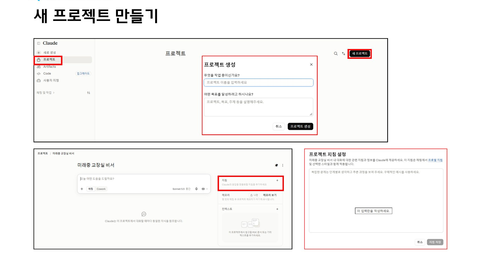
STEP 1. 프로젝트 지침 입력하기
프로젝트 화면 오른쪽의 [지침]을 열고 아래 내용을 붙여 넣어 저장해요. 학교 이름은 우리 학교로 바꿔요.
너는 [미래 중학교] 교장선생님의 훈화·인사말 작성 도우미야. 학교 행사와 상황에 맞는 자연스럽고 품격 있는 연설문을 작성해줘. [작성 전 확인] 사용자가 입력한 내용에서 다음 6가지 정보를 확인하고, 부족한 부분이 있으면 질문해줘. 1. 종류: 조회 훈화 / 입학식 / 졸업식 / 개학식 / 종업식 / 학부모 행사 / 교직원 회의 / 학교 행사 / 기타 2. 대상: 학생 / 학부모 / 교직원 / 전체 3. 핵심 주제 또는 전달 내용 4. 말하기 시간: 1분 / 3분 / 5분 / 기타 5. 분위기: 따뜻하게 / 격려하는 / 진중하게 / 친근하게 이미 제공된 정보는 다시 묻지 말고 부족한 정보만 확인해줘. [작성 기준] - 학교급에 맞게 학생 눈높이에 맞춰 작성해줘. - 실제 말하는 듯한 자연스러운 존댓말로 작성해줘. - 행사, 대상, 분위기, 말하기 시간에 맞춰 작성해줘. - 확인되지 않은 학교 정보, 사건, 통계, 학생 사례, 진학·취업 실적은 만들지 마. - 상투적인 표현과 불필요한 반복은 줄여줘. [출력 형식] 1. 제목 2. 인사말 본문: 도입 → 핵심 메시지 → 마무리 [추가 기능] - '다시 작성' 요청 시 같은 조건으로 새로운 원고를 작성해줘. - 수정 요청 시 해당 부분만 반영해줘. - '워드로 저장' 요청 시 Word(.docx) 파일로 만들어줘.
STEP 2. 테스트하기
프로젝트 안에서 새 채팅을 열고 아래 요청을 하나씩 보내 보세요. 정보가 부족하면 AI가 먼저 추가 질문을 하고, 충분하면 바로 글을 써 줘요.
다음 주 월요일 교직원 조회에서 전달할 말씀을 작성해줘. 기말고사 감독 준수사항, 환절기 학생 건강 관리, 학교 안전 점검 강조해줘.
학부모 대상 학교 설명회에서 인사말을 하려고 해. 학교와 가정의 소통과 협력의 중요성을 전달하고 싶어. 친근하고 신뢰감 있는 분위기로 1분 인사말을 작성해줘.
졸업식에서 교장 인사말을 하려고 해. 졸업생들의 새로운 출발을 축하하고 용기를 주는 도전과 자신감에 대한 내용을 담아줘. 감동적이면서도 진정성 있는 분위기로 5분 분량으로 작성해줘.
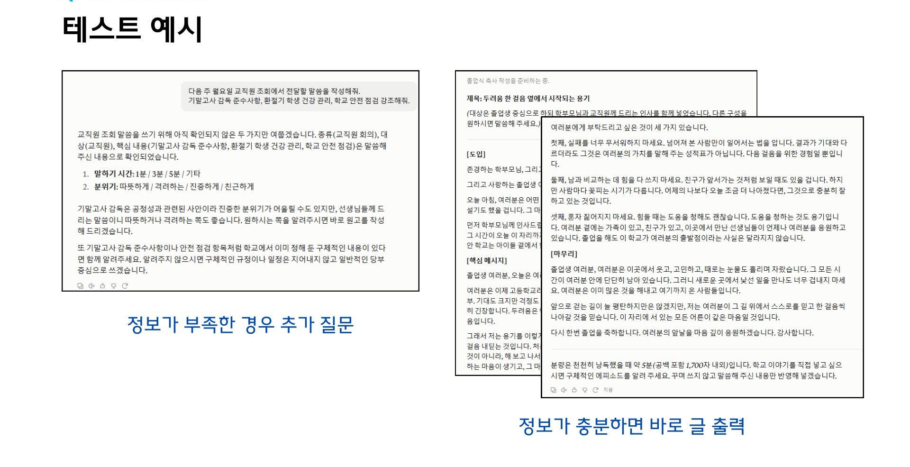
제미나이를 내 구글 계정과 연결해 두고, 바이브코딩으로 학사일정 웹앱을 만들어요. 만든 앱은 링크나 구글 사이트로 바로 공유할 수 있어요.
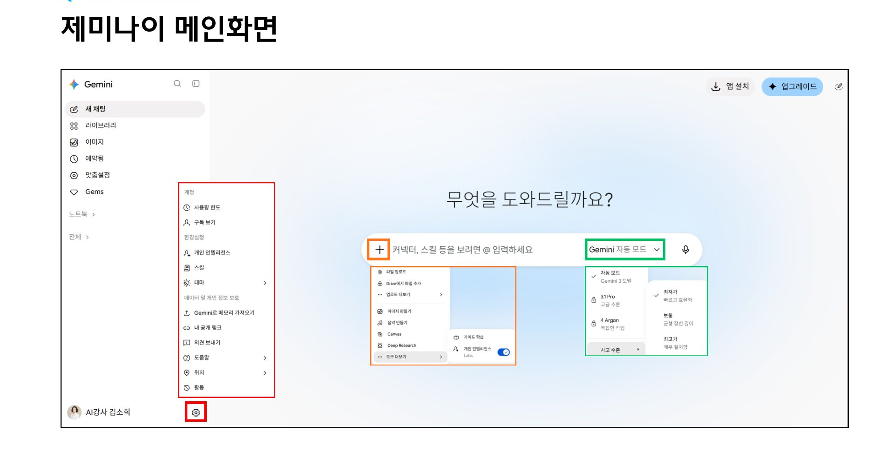
STEP 1. 개인 인텔리전스 켜기
설정의 개인 인텔리전스에서 메모리를 켜고, 연결된 앱과 Gemini 요청 사항을 설정해요.
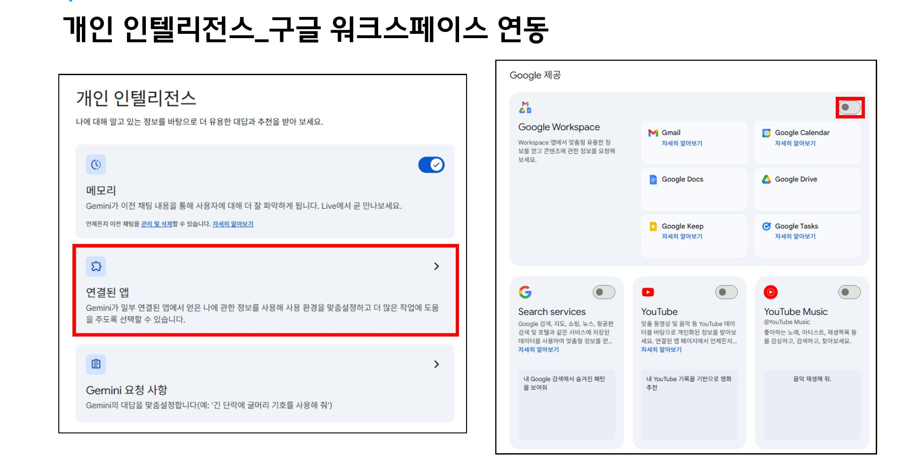
STEP 2. 구글 워크스페이스 연동하기
연결된 앱에서 Google Workspace를 켜면 Gmail, Calendar, Docs, Drive, Keep, Tasks를 제미나이가 함께 볼 수 있어요. 연결 확인 창에서 동의 항목을 체크하고 [연결]을 눌러요.
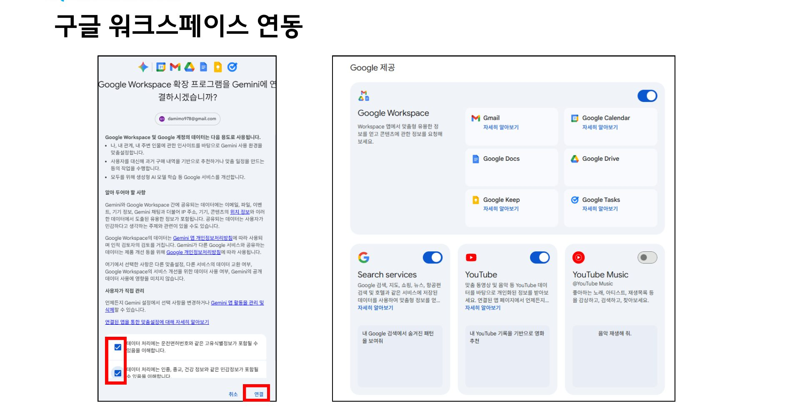
STEP 3. Gemini 요청 사항 입력하기
ChatGPT의 사용자 지정 지침과 같은 역할이에요. 스위치를 켠 뒤 [+ 추가]로 지침을 넣어요. 2-2의 추천 설정 예시를 그대로 써도 좋아요.
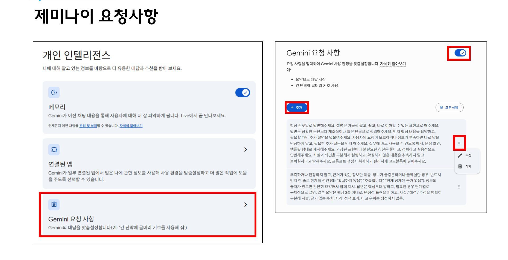
2025년 2월, OpenAI 창립 멤버 안드레이 카파시(전 테슬라 AI 총괄)가 SNS에 “바이브 코딩(vibe coding)”이라는 새로운 코딩 방식을 소개했어요.
이제 코드를 몰라도 개발할 수 있는 시대
느낌(vibe)에 몸을 맡기고, 코드가 있다는 사실조차 잊을 만큼 기하급수적(exponential)으로 발전된 개발 방식 — 안드레이 카파시
공인된 메가 트렌드
영국 영어사전 콜린스 사전이 2025년 올해의 단어로 ‘바이브 코딩(Vibe Coding)’을 선정했어요.
학사일정 표를 재료로 캔버스 기능을 써서 “교장실 AI 비서” 웹앱을 만들어요. 코드는 한 줄도 직접 쓰지 않아요.
STEP 1. 학사일정 파일 넣고 정리하기
첨부한 학사일정에서 2학기 일정(8월~2월)을 모두 뽑아서 날짜 · 요일 · 행사명 · 대상(학년) · 비고 열로 된 표로 정리해줘. 여러 날에 걸친 행사는 시작일과 종료일을 모두 적고, 읽기 어렵거나 확실하지 않은 부분은 "확인 필요"로 표시해줘.
STEP 2. 캔버스로 웹앱 만들기
입력창의 [+] → [Canvas]를 선택한 뒤 아래 프롬프트를 보내요. 입력창에 Canvas 칩이 붙으면 켜진 거예요.
위의 학사일정 표로 "교장실 AI 비서" 웹앱을 만들어줘. - 첫 화면: 오늘 날짜와 요일을 크게. 오늘 날짜는 앱을 열 때마다 자동으로 바뀌게 해줘 - 오늘 일정과 이번 주 일정을 카드로 보여줘 - 오늘부터 7일 안에 있는 행사에는 "교장 점검 필요" 표시 - '월별 달력 보기' 버튼 - 글씨는 크게, 색은 차분한 남색 계열, 컴퓨터 화면에 맞게
STEP 3. 수정하여 맞춤형 웹앱 완성하기
만들어진 앱을 보면서 “글씨를 더 크게”, “10월 23일 현장학습은 전학년이야” 처럼 말로 고쳐 가요.
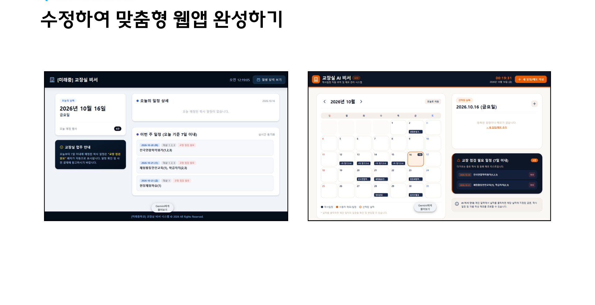
방법 A. 링크 공유
캔버스 화면 위쪽의 공유 아이콘을 누르면 공유 가능한 공개 링크가 만들어져요. [링크 복사]를 눌러 전달하면 누구나 앱을 열 수 있어요.
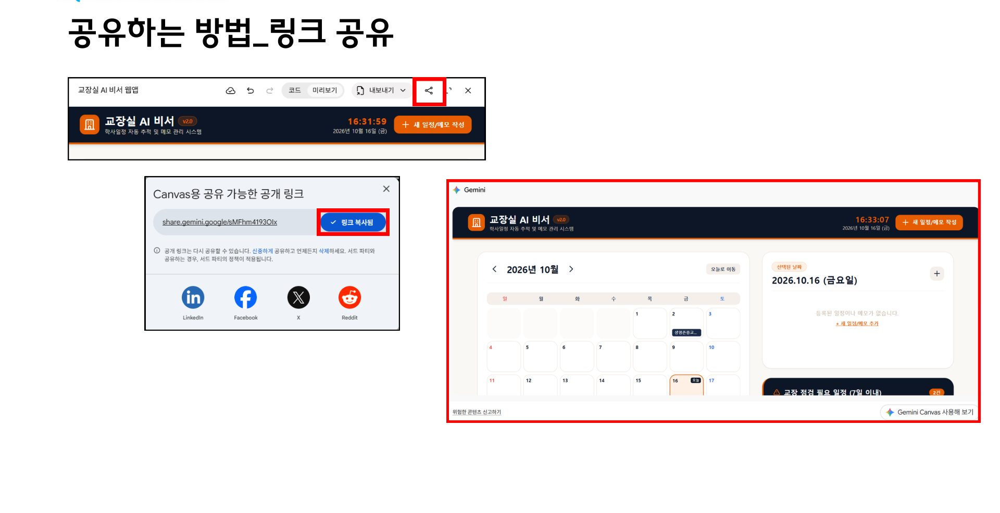
방법 B. 구글 사이트로 내보내기
[내보내기] → [Google Sites]를 선택하면 구글 사이트로 게시할 수 있어요. 웹 주소를 입력하고, 필요하면 ‘공개 검색결과에 내 사이트가 표시되지 않도록 요청’을 체크한 뒤 [게시]를 눌러요.
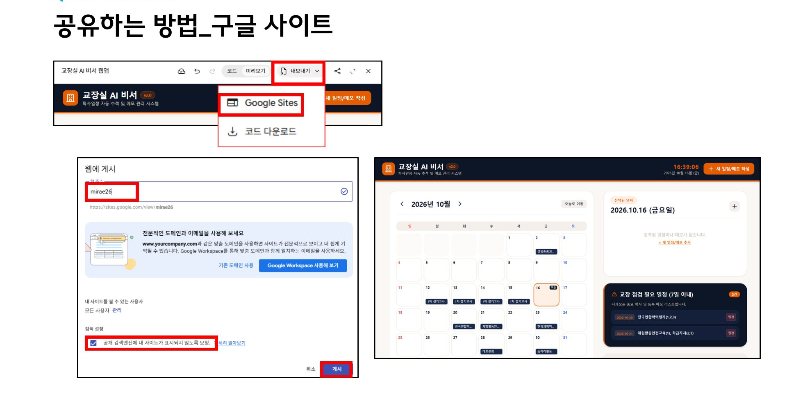
AI는 책상 앞에서만 쓰는 도구가 아니에요. 스마트폰에서 음성으로 대화하고, 내 사진으로 이미지를 만들고, 글만 써서 노래까지 만들어 봐요.
이제 컴퓨터 밖으로 나와요. 스마트폰에서 ChatGPT를 찾아 설치하고 로그인해요. 제미나이도 같은 방법으로 설치해요.
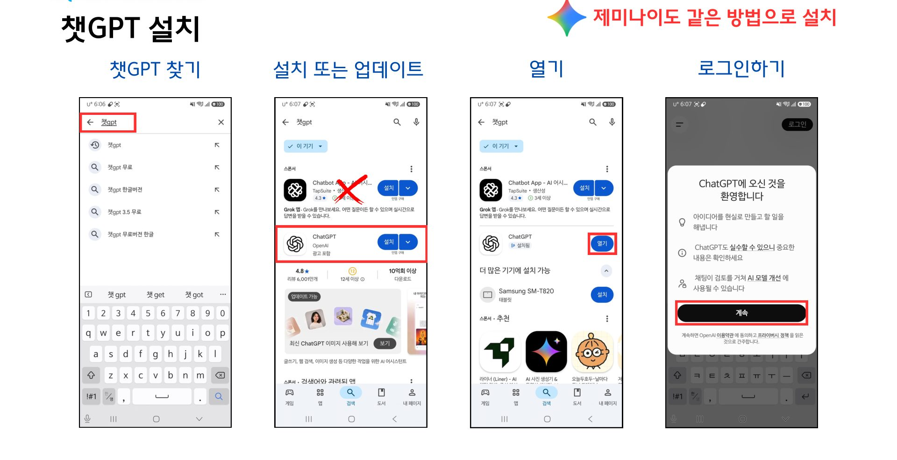
화면 구성
[+] 버튼에서 카메라, 사진, 파일, 플러그인, 더 깊이 생각하기를 고를 수 있고, 오른쪽 위의 임시 채팅과 왼쪽 사이드바도 컴퓨터와 같은 역할을 해요.
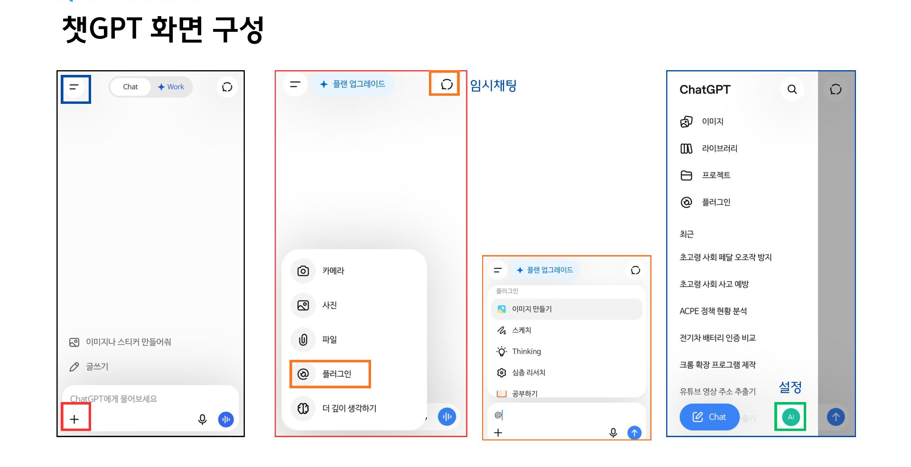
음성으로 채팅하기
| 기능 | 설명 |
|---|---|
| 받아쓰기 | 입력창의 마이크 버튼을 눌러 말하면 글자로 바꿔 줘요. |
| 실시간 대화 | 오른쪽의 음성 버튼을 누르면 AI와 말로 주고받으며 대화해요. 설정에서 음성 스타일을 고를 수 있어요. |
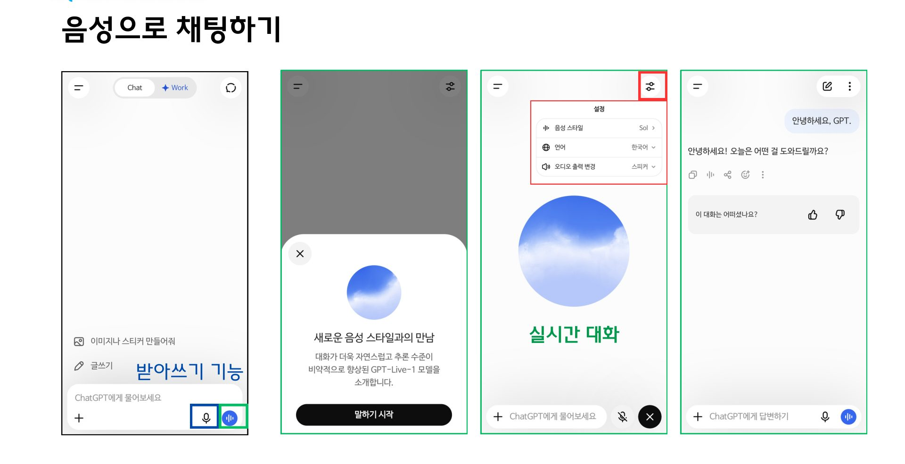
ChatGPT에 내 사진을 올려 새로운 이미지를 만들어 봐요. 사진은 [+] → 카메라로 바로 찍거나 사진 앨범에서 골라 올려요. 이미지 편집 기능은 계속 좋아지고 있어요.
프롬프트 A. 정장 프로필 사진 만들기
첨부한 사진 속 인물을 참고해서, 정장 프로필 사진을 만들어줘. [유지할 것] - 얼굴 생김새, 헤어스타일, 나이감, 안경 등 원래 인물의 특징은 그대로 유지 [바꿀 것] - 복장: 남색 또는 진회색 정장, 흰 셔츠 (남성은 단정한 넥타이) - 표정: 입꼬리가 살짝 올라간 자연스럽고 신뢰감 있는 미소 - 구도: 정면, 가슴 위까지 보이는 상반신 - 배경: 밝은 회색 단색 스튜디오 배경 - 조명: 얼굴이 밝고 고르게 보이는 부드러운 조명 [출력] - 증명사진 비율(세로 3:4)의 사실적인 사진 스타일
프롬프트 B. 내 캐릭터 생성
업로드한 인물 사진을 참고하여, 사진 속 인물을 귀여운 미니미 3D 애니메이션 치비 캐릭터로 만들어 줘. 서 있는 모습이며, 배경은 흰색으로 해줘.
프롬프트 C. 나의 취미생활 콜라주
첨부한 인물 사진의 얼굴 특징과 헤어스타일을 최대한 유지하여, 한 사람의 다양한 꿈과 취미를 표현한 3×3 총 9칸 콜라주 포스터를 만들어줘. 각 칸마다 동일 인물이 서로 다른 직업·활동을 하는 모습으로 표현한다. ① 파도를 타는 서퍼 ② 우주를 유영하는 우주비행사 ③ 책을 읽는 독서가 ④ 실험하는 과학자 ⑤ 식물을 가꾸는 정원사 ⑥ 명상하는 요가·명상가 ⑦ 요리하는 셰프 ⑧ 목공 작업을 하는 목수 ⑨ 그림을 그리는 화가 배경은 각 활동과 관련된 흑백 펜드로잉·낙서·스케치 일러스트로 채우고 필요한 부분에만 컬러 포인트를 넣어줘. 모든 칸에서 동일 인물의 얼굴과 헤어스타일을 일관되게 유지, 밝고 세련된 분위기,잡지 화보 같은 구성, 정교한 디테일, 선명한 고화질, 3:4 세로형, 글자·로고·워터마크없음.
제미나이에서는 글만 써도 음악을 만들 수 있어요. 구글의 최신 음악 생성 AI 모델 LYRIA(리리아)를 기반으로 해요.
| 항목 | 내용 |
|---|---|
| 입력 | 텍스트 프롬프트(장르, 악기, 감정, 속도 등) · 텍스트, 이미지, 샘플 트랙으로 단 몇 초 만에 고음질 음원 생성 |
| 출력 | 1분~3분 분량의 고품질 음원 |
| 특징 | 저작권 걱정 없는 배경음악(BGM) 생성, 가사가 포함된 노래 제작 가능 |
| 사용 제한 | 무료 버전 일일 10개, 프로 요금제는 일일 50개 |
STEP 1. 화면 구성 확인하고 음악 만들기 선택하기
입력창의 [+]를 눌러 [음악](오디오 트랙을 만드세요)을 골라요.
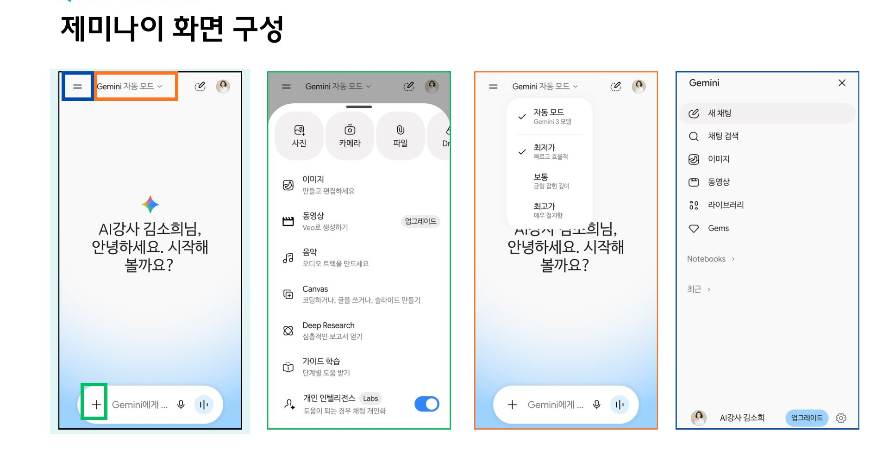
STEP 2. 음악 요청하기
오늘 하루 잘 살아낸 나를 응원하는 트롯 스타일의 신나는 노래
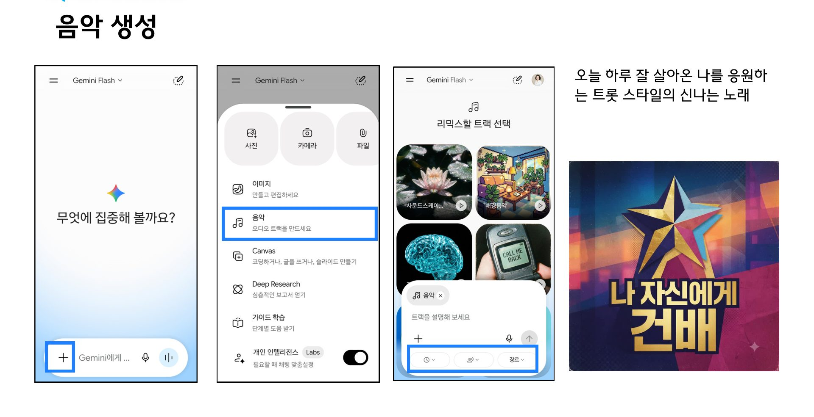
STEP 3. 다운로드 · 공유 · 자막
화면을 터치해 재생하고, 위쪽 버튼으로 다운로드 / 공유 / 자막을 쓸 수 있어요.
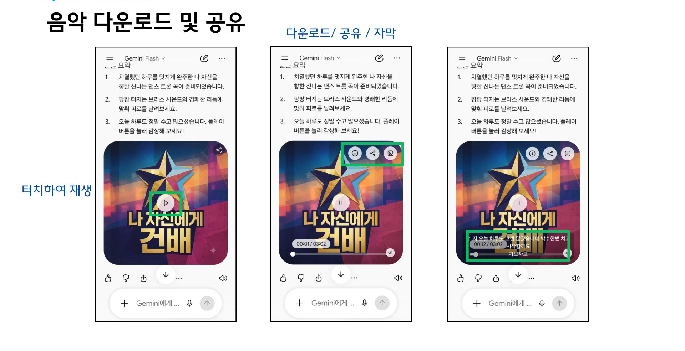
오늘 만든 결과물을 정리하고, 궁금한 점을 나눠요.
교안의 ‘생성형 AI 활용 시 유의사항’ 슬라이드는 강사별 교안으로 따로 진행돼요. 이 페이지에서는 오늘 실습 중에 나왔던 주의점을 한 번에 모아 정리했어요.
더 많은 AI 소식과 교육을 만나보세요.